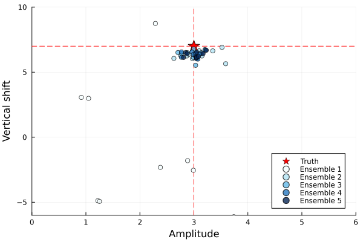
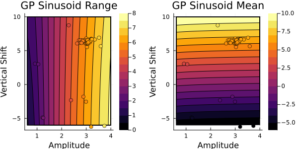

CalibrateEmulateSample.jl
CalibrateEmulateSample.jl solves parameter estimation problems using accelerated (and approximate) Bayesian inversion.
The framework can be applied currently to learn:
- the joint distribution for a moderate numbers of parameters (<40),
- it is not inherently restricted to unimodal distributions.
It can be used with computer models that:
- can be noisy or chaotic,
- are non-differentiable,
- can only be treated as black-box (interfaced only with parameter files).
The computer model is supplied by the user, as a parameter-to-data map $\mathcal{G}(\theta): \mathbb{R}^p \rightarrow \mathbb{R}^d$. For example, $\mathcal{G}$ could be a map from any given parameter configuration $\theta$ to a collection of statistics of a dynamical system trajectory. $\mathcal{G}$ is referred to as the forward model in the Bayesian inverse problem setting.
The data produced by the forward model are compared to observations $y$, which are assumed to be corrupted by additive noise $\eta$, such that
\[y = \mathcal{G}(\theta) + \eta,\]
where the noise $\eta$ is drawn from a $d$-dimensional Gaussian with distribution $\mathcal{N}(0, \Gamma_y)$.
The inverse problem
Given an observation $y$, the computer model $\mathcal{G}$, the observational noise $\Gamma_y$, and some broad prior information on $\theta$, we return the joint distribution of a data-informed distribution for "$\theta$ given $y$".
As the name suggests, CalibrateEmulateSample.jl breaks this problem into a sequence of three steps: calibration, emulation, and sampling. A comprehensive treatment of the calibrate-emulate-sample approach to Bayesian inverse problems can be found in Cleary et al. (2020).
The three steps of the algorithm: see our walkthrough of the Sinusoid Example
Learn the vertical shift and amplitude of the signal given the noisy observation

The calibrate step of the algorithm consists of an application of Ensemble Kalman Processes, which generates input-output pairs $\{\theta, \mathcal{G}(\theta)\}$ in high density around an optimal parameter $\theta^*$. Here, $\theta$ are amplitude and vertical shift pairs, and $\mathcal{G}(\theta)$ are the resulting signal mean and range. This $\theta^*$ will be near a mode of the posterior distribution (Note: This is the only time we interface with the forward model $\mathcal{G}$).
calibrate with EKP to generate data pairs...
The emulate step takes these pairs $\{\theta, \mathcal{G}(\theta)\}$ and trains a statistical surrogate model (e.g., a Gaussian process), emulating the forward map $\mathcal{G}$.
emulate the map statistically from EKP pairs...
The sample step uses this surrogate in place of $\mathcal{G}$ in a sampling method (Markov chain Monte Carlo) to sample the posterior distribution of $\theta$.
sample the emulated map with MCMC...

Code Components
CalibrateEmulateSample.jl contains the following modules:
| Module | Purpose |
|---|---|
| CalibrateEmulateSample.jl | A wrapper for the pipeline |
| Emulator.jl | Modular template for the emulators |
| GaussianProcess.jl | A Gaussian process emulator |
| Scalar/VectorRandomFeatureInterface.jl | A Scalar/Vector-output Random Feature emulator |
| MarkovChainMonteCarlo.jl | Modular template for Markov Chain Monte Carlo samplers |
| Utilities.jl | Helper functions |
Authors
CalibrateEmulateSample.jl is being developed by the Climate Modeling Alliance.